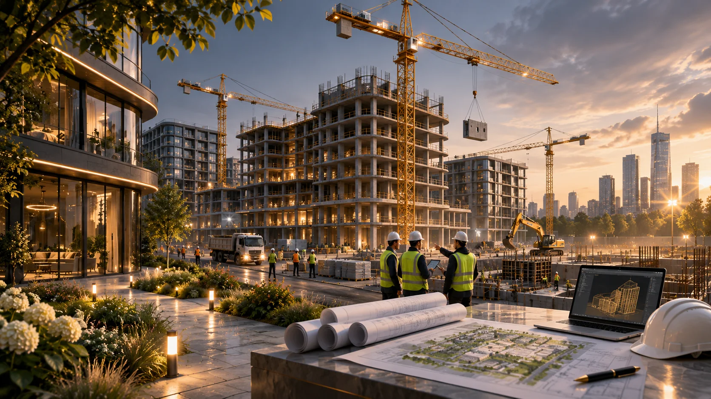

МосПромСтрой · строительный консорциум
Объединяем строительные компетенции. Реализуем проекты вместе.
От частных резиденций и быстровозводимых зданий до инженерных задач, промышленных объектов и развития территорий. Формируем команды под задачи заказчиков.
Строительные и инженерные решения
Выберите направление и перейдите на отдельную страницу. Представленные изображения — концептуальные визуализации, а не подтверждённые построенные объекты.

Быстровозводимые здания
Производственные корпуса, склады, металлические конструкции.
Подробнее ↗
3D-сканирование
Съёмка объектов и территорий с БПЛА, наземные измерения, цифровые модели.
Подробнее ↗
Изготовление и поставка бетона
Поставка по спецификации, подбор условий под строительный объект.
Запросить условия ↗
Дом твоей мечты
Индивидуальные дома под ключ в Москве и Московской области, современные проекты.
Смотреть дома ↗Демонтаж сооружений
Обследование, планирование демонтажа, вывоз строительных отходов по согласованному проекту.
Обсудить задачу ↗Дизайн помещений
Квартиры, частные дома, рестораны и общественные пространства.
Обсудить дизайн ↗
Архитектурные 3D-макеты
Макеты районов, зданий и стадионов для выставок и презентаций.
Обсудить макет ↗Промышленные и коммерческие объекты
Строительство, реконструкция и инженерные решения.
Подробнее ↗Страницы услуг, ещё не подготовленные к выпуску, временно открывают контактную страницу. При следующих обновлениях заменим эти ссылки на профильные HTML.
У вас есть строительная компания или проект?
Мы рассматриваем сотрудничество с подрядчиками, проектировщиками, инженерными командами, поставщиками и собственниками строительных площадок. Участие и распределение работ обсуждаются индивидуально.